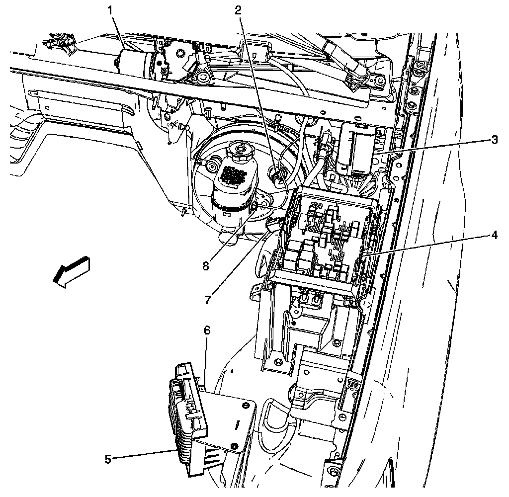

Brake Fluid Level Sensor/Switch: Locations
Hydraulic Brake Component Views

1 - Windshield Wiper Motor
2 - Power Brake Booster
3 - Windshield Washer Solvent Heater
4 - Fuse Block - Underhood
5 - Engine Control Module (ECM)
6 - Transmission Control Module (TCM)
7 - Brake Booster Vacuum Sensor
8 - Brake Fluid Level Switch